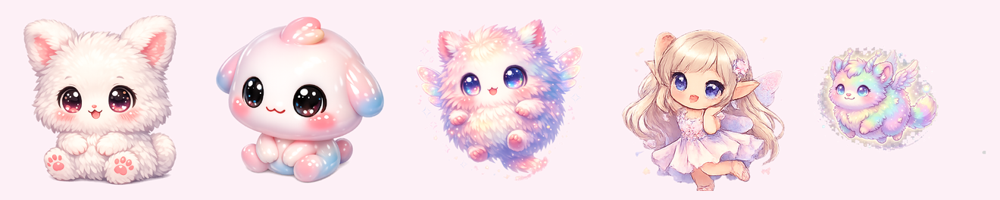

别人的 AI 桌宠陪你聊天，我做的这只——你不写代码，它会饿 🐾
（已开源 · mac/win 都能装）
群里随手发了个投票：能不能做个桌宠，读你的 Git 提交和 Claude Code 用量，你写得多它就升级、换状态？
57.9% 的人选了「有兴趣」，还有一波人直接点了「有兴趣，想参与！」
行吧。群里都想要，那我做。
几天后，这只——码宠 CodePet——就挂在我桌面右下角了。开源，mac 和 win 都能装。
它不陪你聊天，它盯着你干活
市面上的 AI 桌宠，大多是陪你唠嗑的。这只不一样。
你每写一行代码、每跟 Claude Code 完成一个任务，它都看在眼里：涨经验、升级，从「摸鱼 😴」一路进化到「卷王 🔥」。卷到深夜会给你撒花 🎉，好几天不写，它能量见底，会"饿"——冒 💤 提醒你。
三个我自己最上头的点
1. 它是"活"的，不是一张静图。
会呼吸、会眨眼、踩着自己的影子、时不时自个儿蹦一下。其中几只更绝——平时安静站着，你点它一下、或者你一动代码，它就跳一小段舞，跳完歇下。有张有弛，像个真的小家伙。

↑ 会舞剑的白衣剑仙（也有元气少女跳舞版）
2. 它实时懂你在干嘛。
通过 Claude Code 的官方 hooks，你每提交一个 prompt、每完成一个任务、每调一次工具，桌宠当场就反应、即时涨经验。一个人写代码，旁边有个小家伙陪着卷——这感觉，挺上头的。
小插曲：一开始我想按 token 数算经验。做完才发现 ~/.claude 里的 token 计数根本不准，白忙一晚上。后来改成按"你提交了几次、问了几次、完成几次任务"来算——反而更稳，也更隐私。
3. 隐私守得很死。
所有数据只读你本机的 git 和 ~/.claude 用量，全本地、绝不外传。而且只统计"发生了多少次"（提交数、提问数、任务数），从不读你的对话内容、也不读你的代码。
这句话不是我嘴上说说——开源的，你能逐行去翻。
9 只原创宠物，还能传你自己的图
设置里 9 只随你选，点一下即换（正好凑成九宫格）：
🐱 奶猫 / 🍡 麻薯 / 🧚 棉花精灵 / 💃 小舞精灵 / 🌈 彩虹兽 / 🦆 小黄鸭 / 🗡️ 白衣剑仙 / 🎀 元气少女 / 💃 程序媛

最好玩的是——你能传自己的图，做专属桌宠。
传一张图，就生成一只：单张做静态的，传个九宫格，它自动切成 9 帧、变成会跳舞的那种。 把你家猫的照片、自己画的小人、喜欢的角色拖进去，桌面上就多一只独一无二的它。图也全在本地，不外传。
翻车记录：我试过直接把真人办公室照片做成桌宠。结果——桌面上多了个"贴着照片的方块"，丑。所以原创立绘还是得抠成透明背景的，这点别学我。
从代码到立绘，几乎全是 AI 做的
这只桌宠，从第一行代码到每一只宠物立绘，几乎全是 AI 做的。
· 代码：用 Claude Code 从零写——透明窗、数据采集、成长系统、帧动画、打包成安装器，几天搞定。
· 形象：每只宠物都是 AI 图像工具生成的原创小动物。
这也是我一直在做的事：把群里冒出来的小创意，用 AI 真做成能用、能发布、能开源的东西。 这次是大家投票要的，我就做出来了。
怎么用上它
两种方式，挑你舒服的：
懒人版：直接装。mac 下载 .dmg、win 下载 .exe，拖进去就能跑。（首次打开系统会拦一下，未签名而已，右键「打开」即可。）
折腾版：clone 源码改。技术栈特别简单——原生 JavaScript + Electron，没 TypeScript、没重框架，npm install && npm start 就能跑。
装好后，去设置里开「⚡ 实时联动 Claude Code」，它就会即时陪你卷了。
ANTHROPIC_BASE_URL）。桌宠靠的是 Claude Code 的 hooks，跟用哪个模型无关——所以你用便宜模型，它照样实时反应。开源，欢迎一起共创
这本来就是大家投票投出来的项目，当然要一起做大。代码全开源（Apache-2.0）：
👉 github.com/jnMetaCode/codepet
（喜欢点个 Star ⭐）
想参与，挑你舒服的方式：
💡 有想法（新宠物、新玩法、新台词、想喂更多数据源）→ 提 issue，或直接 PR；
🛠️ 想动手 → git clone 就能改，上手零门槛；
🙋 想深度参与 → 投票里选了"想参与"的朋友，还有任何感兴趣的同学，扫码进群，一起把它做下去。安装包、新版本、共创任务都在群里同步。
养只码宠，让它陪你卷。有想法，咱们一起把它做得更好玩。
喜欢就去点个 Star ⭐
也欢迎你一起共创！🐾
「AI不止语」：群里想要什么，我就用 AI 把它做出来——这次，也欢迎你一起做。